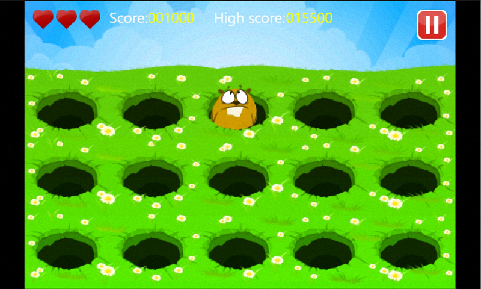
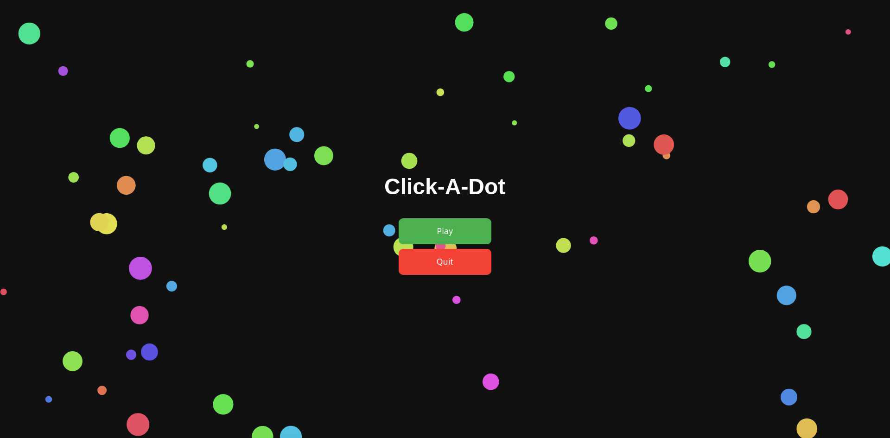
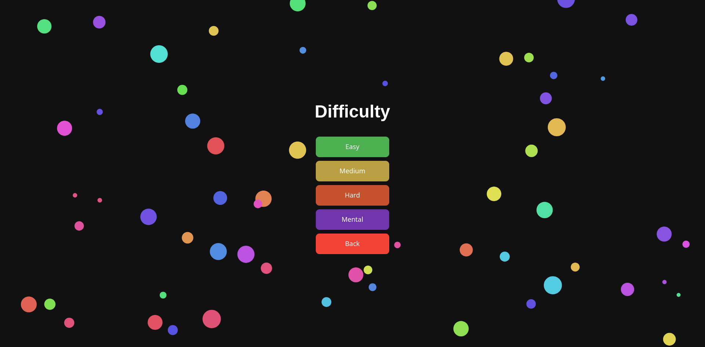
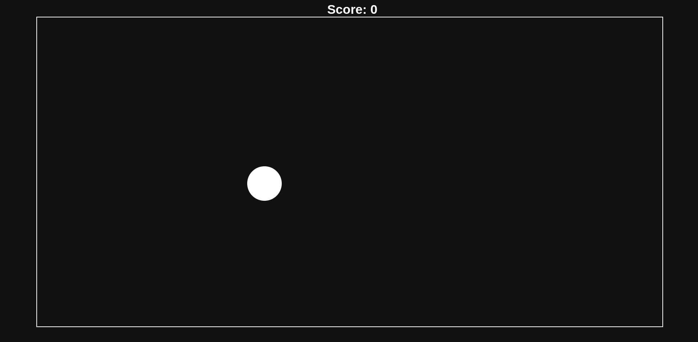
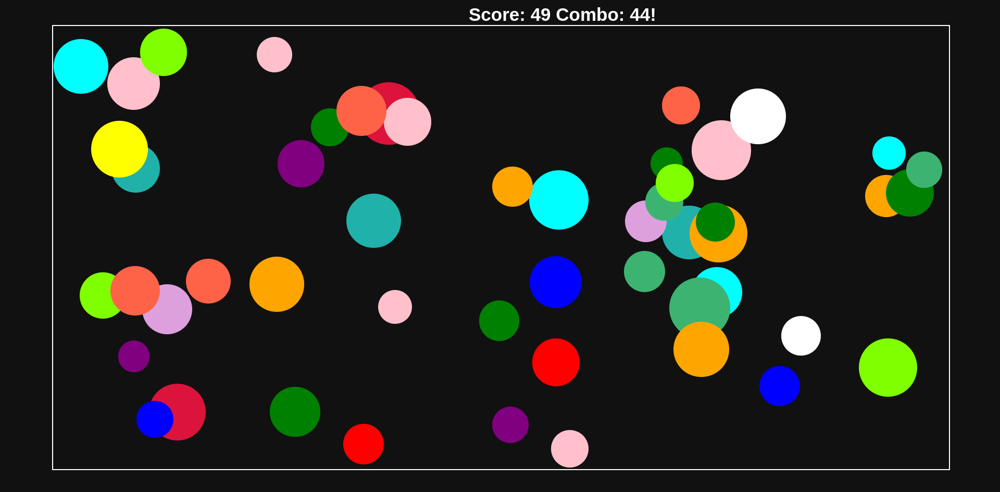
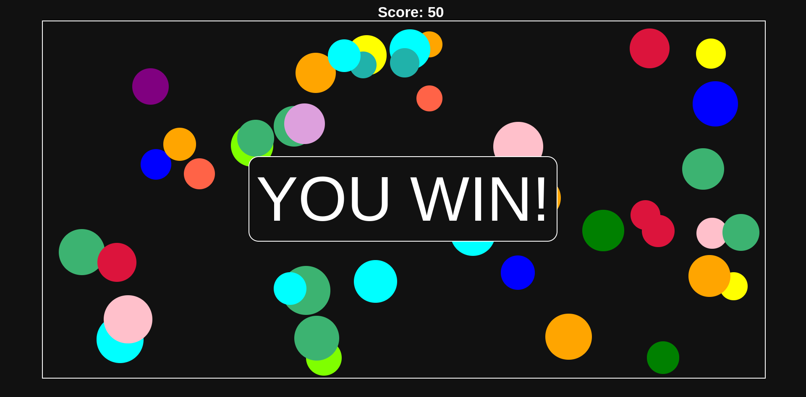

The game concept we have decided to create is called Whack-A-Dot.
We originally had influence by the well known game Whack-A-Mole.

We wanted to go for a time-consuming game where you just click dots until you either fill up the screen, or you can reach a certain amount of dots clicked.
This week we started off by placing the overall border where the dots can spawn. Then we made it to where if a white dot gets clicked, it will turn into one of the random colors that we listed in the code. If you fail to click the white dot in time, it will disappear. Our game also includes multiple modes that involve different speeds and dot sizes.
Once you get into our game, you will be brought to the main menu where you can choose to either play or quit. Once you hit play, then you will be directed to the difficulty page where you can choose difficulties from easy to mental. This is an example of what we have so far:


Once you have selected the difficulty, the game starts off with a single white dot and progressively gets faster.When you get to click a dot it will change colors and stay there for the remainder of the game. This is what our gameplay looks like so far:


Each difficulty will have different speeds and also different goals you need to hit. For example, the easiest difficulty will have a goal of 250 dots clicked, medium difficulty will have the goal set to 500, hard difficulty is set to 750, then the final difficulty will set it all the way to 2000 dots required. After you finally reach you're goal, then you will get the ending screen, simply saying that you've won:
